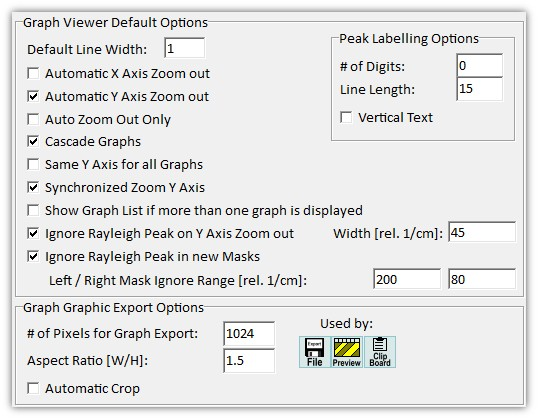

|
图谱查看器选项
|

图谱查看器默认选项
每次创建新的图谱查看器时都会使用这些选项。
默认线宽（整数编辑框）：
设置绘制图谱对象的默认线宽。
自动放大X轴（复选框）：
如果勾选，当显示的图谱更改时，X轴会自动放大。
自动放大Y轴（复选框）：
如果勾选，当显示的图谱更改时，Y轴会自动放大。
层叠图谱（复选框）：
如果勾选，显示多个图谱对象时Y轴会层叠显示。
所有图谱使用相同Y轴（复选框）：
如果勾选，同一查看器中的所有图谱对象共享相同的Y轴标尺。
同步缩放Y轴（复选框）：
如果勾选，使用鼠标滚轮缩放时所有图谱对象会同步缩放。
如果显示多个图谱则显示图谱列表（复选框）：
如果勾选，当显示多个图谱时，将自动显示已显示图谱对象的列表。
放大Y轴时忽略瑞利峰（复选框和浮点编辑框）：
如果勾选，光谱数据的Y轴缩放会自动忽略瑞利峰。
在浮点编辑框中，您可以定义应忽略的光谱范围（以相对波数为单位）。
在新掩模中忽略瑞利峰（复选框和浮点编辑框）：
如果勾选，分析对话框中的掩模会自动移除瑞利峰。您可以通过设置距激发波长的左右距离来定义应移除的范围。
峰标记选项
位数（整数编辑框）：
设置峰标签的默认位数。
线长（整数编辑框）：
设置峰标签的默认线长。
垂直文本（复选框）：
如果勾选，峰标签文本垂直绘制。
图谱图形导出选项
图谱导出像素数（整数编辑框）：
定义导出位图的像素宽度。
宽高比（浮点编辑框）：
定义导出位图的宽/高比。
自动裁剪（复选框）：
如果勾选，导出前将自动移除白色边框。